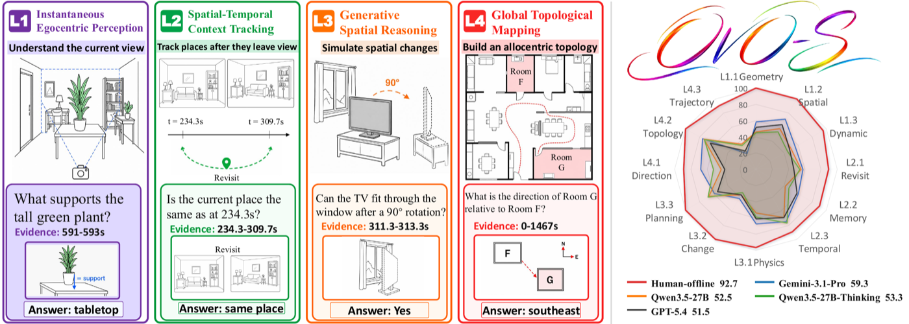
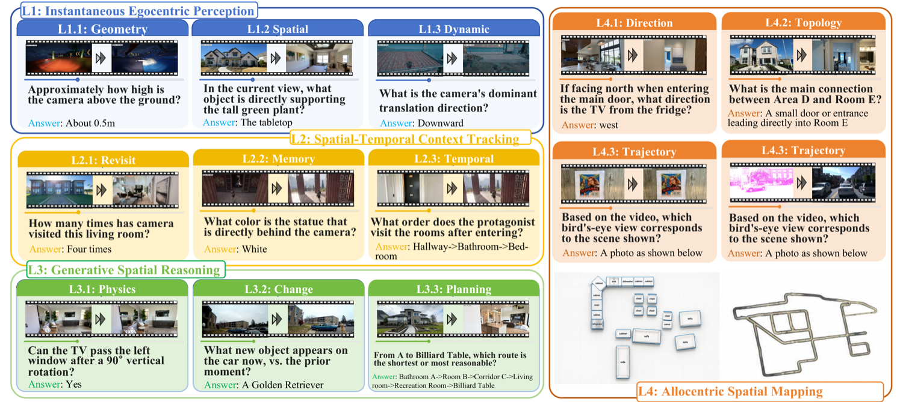

Overview
TaxonomyEMNLP 2026 Main Oral Outstanding Award Nominee
OVO-S-Bench: A Hierarchical Benchmark for Streaming Spatial Intelligence in Multimodal LLMs
Constrains models to the video prefix available at query time and evaluates streaming spatial intelligence across four levels, from instantaneous egocentric perception to global topological mapping. Mapping the environment topology emerges as the dominant bottleneck, with frontier models far behind humans.